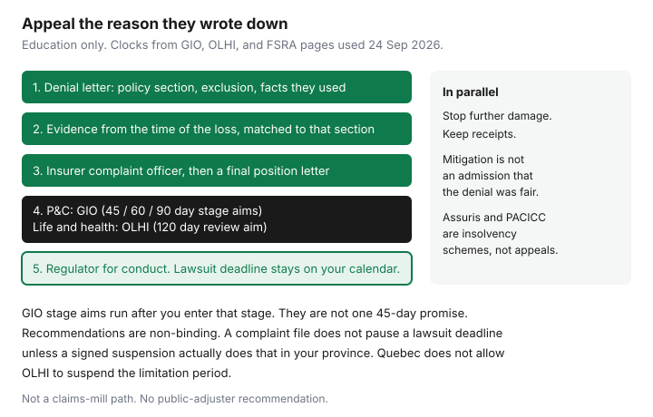

Insurance · Canada
What to Do When a Canadian Insurance Claim Is Denied: Appeal Steps That Stay Factual
A denied claim goes quiet when the letter feels final. It is final only inside the insurer’s first decision. Canadian property, auto, life, and health contracts still have an internal complaint step, and member companies sit under an ombuds service after that. The path is factual. You answer the exclusion they cited. You do not send a mood, a forum thread, or a demand that they “be fair” without the wording.
How to open a home claim, including Ontario’s notice and proof-of-loss timing, is already written. This page starts when the answer is no. It is not a claims mill, and it does not send you to hire anyone.
Disclosure: Education only. This page does not recommend a public adjuster, a repair loan, a claims service, or any other product sold against a denial. Some provinces license public adjusters, who charge you a fee. You do not need one to use the complaint path below. We do not claim a partnership with any insurer, lawyer, or contractor. Illustrations are not quotes. Rules read 24 Sep 2026.
Key takeaways
- A denial that only says “not covered” is incomplete for your file. Ask which policy section, exclusion, or fact the decision uses.
- Answer that citation with evidence from the time of the loss: photos, weather, maintenance, police or fire reports, and the declarations page you actually bought.
- Finish the insurer’s complaint process and get a final position letter. GIO’s published stage aims are 45, 60, and 90 days. OLHI’s review aim is 120 days from written acknowledgment. None of those clocks replaces a lawsuit deadline.
- Property and auto complaints go toward GIO and the provincial P&C regulator. Life and health go toward OLHI. Assuris and PACICC respond to insolvency, not to a denial by a company that is still operating.
- Keep mitigating. Stopping further damage is a policy duty. It is not an admission that the denial was correct.
Read the denial letter for policy wording citations—not just ‘not covered’
Read the letter once for the result and a second time for the citation. You want the policy form number, the section or exclusion, and the fact they say triggers it. “Water is not covered” is not yet a reason. Sudden discharge from a plumbing system, sewer backup, overland flood, and groundwater are different grants and different exclusions. The water endorsement guide and the overland flood guide are the map. Your declarations page is the proof of which grants you bought.
If the letter does not cite wording, reply once, in writing, and ask for it. Keep the reply short: the claim number, the date of the letter, and a request for the section relied on and the facts applied to your loss. Do not argue the whole case in that note. You cannot match evidence to a sentence they have not written.
| What the letter is really saying | Typical next step | What will not decide it |
|---|---|---|
| The amount is too low | Proof of loss, then appraisal if your provincial conditions provide it | A coverage complaint that never prices the loss |
| The peril is excluded | Facts that show the cited exclusion does not fit, or that an endorsement you bought does | Appraisal, which prices a covered loss and does not rewrite the grant |
| You did not cooperate or you were late | The notice you did send, mitigation receipts, and why the delay happened | A new contractor quote with no timeline |
| They say you misrepresented the risk | The application, the inspection, and what you disclosed. This is where a lawyer consult becomes proportional faster. | An ombuds file that you let run past a limitation date |
Gather contemporaneous evidence that matches the cited exclusion
Contemporaneous means the photo, report, or receipt existed because of the loss, not because the denial arrived. Adjusters discount a reconstruction built after the “no.” Build the folder around the citation.
- The exclusion they named. If they say the roof leaked for months, you want the repair invoice from the last time you actually fixed it, or you acknowledge the leak was old. Pretending is how a denial becomes an allegation of a false statement.
- The endorsement they ignored. If you bought sewer backup, the declarations page and the limit belong on top of the folder. A denial that treats every water loss as groundwater has to meet that page.
- Official records. Fire department, police, a municipal flood notice, or a weather record for the date. Save the PDF. A screenshot of a social post is weaker than the office that attended.
- Your own timeline. When you noticed the loss, when you mitigated, when you gave notice. The home claim guide states Ontario’s “forthwith” notice and “as soon as practicable” proof of loss. Other provinces use their own conditions. Late notice is a defence only if you leave it unexplained.
For an auto denial, add the liability card, the police report threshold that applied in your province, and any written fault code. The collision checklist has those clocks. Do not mix a fault-chart argument into a home-exclusion folder.

Internal appeal and ombuds timelines
Use the company’s complaint officer, not a second call to the adjuster who signed the denial, when the adjuster has already closed the point. Ask for a final position letter. That letter is the ticket for the ombuds and, in Ontario, for FSRA.
General Insurance OmbudService handles eligible home, auto, and business disputes with subscriber companies. Its process page, used 24 Sep 2026, says investigation officers review a case once you have a final position letter. Published stage aims, barring exceptional circumstances, are 45 days for informal conciliation, 60 days for mediation, and 90 days for senior adjudication, each measured from when the file enters that stage. Senior adjudication issues non-binding recommendations. Most files, GIO has reported, close earlier at the assistance stage. A 45-day line on a website is not a promise that your cheque is rewritten in 45 days.
OmbudService for Life and Health Insurance is the door for life, health, disability, and similar products at participating companies. OLHI’s process, used 24 Sep 2026, requires a final position letter. The stated objective is to complete a review within 120 days from the written acknowledgment that the complaint was accepted. An OmbudService Officer investigation is aimed at 45 days if the file is escalated. Recommendations are non-binding. OLHI asks the parties to sign an agreement suspending the limitation period while it reviews. Its own FAQ says that suspension is not legally allowed in Québec. If you live in Québec, or the policy says Québec law, speak to a lawyer about the deadline before you wait on a file. Everywhere else, still write the deadline down yourself. A form you have not signed has not paused anything.
Regulator complaint paths differ for P&C vs life/health
Regulators supervise conduct and licensing. They are not a second adjuster who can be talked into a larger contents cheque.
| Product | After the final position letter | Regulator examples |
|---|---|---|
| Home, tenant, condo, auto | GIO, if the insurer is a subscriber | FSRA in Ontario wants the final position letter, or proof you tried to get one. AMF in Québec. Insurance councils or the superintendent elsewhere. |
| Life, health, disability, many creditor insurance products | OLHI, if the insurer participates | The life-and-health regulator in your province. Do not open a GIO file for a life claim. |
| Insurer failure | Not this ladder | Assuris for member life and health insurers. PACICC for member property and casualty insolvency. A solvent company’s denial is a complaint, not an insolvency. |
FSRA’s property-complaint page, used 24 Sep 2026, says the contact centre aims to assess within 3 business days whether the company or person is licensed, and that the service goal is to complete a review of 80 percent of complaints within 90 days. Complex files take longer. FSRA’s decision on a complaint is not a court judgment, and it does not award you the claim. Use it when the issue is how you were treated, a licensing problem, or a failure to answer. Use the policy and, if needed, a lawyer when the issue is whether the loss is covered.
When an independent appraisal or legal consult is proportional
Appraisal, where the provincial conditions provide it, decides the amount of a loss after a proof of loss. The home-claim guide records Ontario’s rule that you demand appraisal in writing after the proof is delivered, and that a party who does not appoint an appraiser within seven clear days can have one appointed by the court. Appraisal does not, by itself, decide that an excluded peril was covered. Hiring a second contractor to argue value can be proportional on a large contents list. Hiring one to re-litigate a flood exclusion is the wrong tool.
A legal consult is proportional when any of these is true: the denial cites misrepresentation, the amount you would absorb is large relative to a short consult, a limitation date is close, or someone was injured. It is not proportional for a $400 contents dispute you can document yourself. This page cannot tell you which limitation period applies. Ontario’s Limitations Act, 2002, uses a basic two-year period for many claims, running from discovery, and policies sometimes print a shorter clause. Whether that shorter clause binds you is a legal question. Read the clause, read the denial date, and do not assume a forum’s “one year from the fire” sentence is still your statute. The home-claim guide makes the same warning.
Some provinces license public adjusters. They charge a fee, often a share of the claim. This guide does not recommend that hire. The complaint officer, GIO or OLHI, appraisal on amount, and a lawyer when the dollars or the deadline justify it, are available without that contract.
Parallel path: mitigate damage anyway so losses do not grow
The duty to limit the loss does not pause because you are appealing. A house that stays wet grows mould. A car left unrepaired in a live lane is a second loss. Do the reasonable thing, keep every receipt, and tell the insurer in writing that you are mitigating while you dispute coverage. Ask, if you can, before you start a full rebuild. Emergency dry-out and a tarp are not a renovation.
Mitigation is not an admission. Paying a plumber to stop the water does not mean you agree the exclusion applies. Say that in the email so a later letter cannot pretend you abandoned the claim. If you eventually repair because people cannot live in the house, keep the invoices in the same folder as the denial. If the appeal succeeds, those invoices are the proof of the amount. If it fails, you at least did not add a second excluded loss by waiting.
Injury and liability claims are not a DIY pause either. Tell the insurer, follow the auto injury clocks on the collision checklist, and get care. An appeal about property damage does not delay a medical report someone else needs.
Sources & date stamps
- GIO, how the process works: final position letter before investigation; informal conciliation 45 days, mediation 60 days, senior adjudication 90 days, each from entry to that stage, barring exceptional circumstances; recommendations non-binding. Used 24 Sep 2026. giocanada.org.
- OLHI, our process and FAQ: final position letter; review aim 120 days from written acknowledgment; OmbudService Officer aim 45 days; limitation suspension is not legally allowed in Québec. Used 24 Sep 2026.
- FSRA, how to resolve a property and other insurance complaint: complaint officer and final position letter; GIO for property and auto; OLHI for life; 3-business-day licensing check; service goal of 80 percent of complaint reviews within 90 days. Used 24 Sep 2026.
- Ontario home statutory conditions and the seven-clear-day appraisal appointment, as restated on the home-claim guide. Confirm the consolidated statute. Used 24 Sep 2026.
- Assuris (life and health member insolvency) and PACICC (property and casualty member insolvency) are not denial appeals. Assuris consumer figures used on the life guide, 23–24 Sep 2026.
Frequently asked questions
What should I do first if my Canadian insurance claim is denied?
Read the letter for the policy section and the facts the insurer used. If it only says not covered, ask in writing for the citation. Then gather evidence from the time of the loss that meets that citation, and keep mitigating so the damage does not grow.
How long do GIO and OLHI take?
GIO publishes stage aims of 45 days for informal conciliation, 60 days for mediation, and 90 days for senior adjudication, each from when the file enters that stage. OLHI aims to finish a review within 120 days of its written acknowledgment. These are aims, the outcomes are non-binding, and they do not replace a lawsuit deadline.
Do I complain to FSRA or to the ombuds?
Finish the insurer’s process and get a final position letter. Home and auto disputes with a subscriber company go to GIO. Life and health go to OLHI. FSRA, the AMF, and other provincial regulators take conduct complaints. They do not re-underwrite your cheque. Assuris and PACICC are for insurer insolvency.
Should I hire a public adjuster?
This page does not recommend it. Appraisal can price a covered loss. A lawyer consult is proportional when the denial alleges misrepresentation, the amount is large, or a limitation date is close. You can use the complaint path without hiring a public adjuster.
Does appealing mean I should wait to repair?
No. Stop further damage, keep receipts, and tell the insurer you are mitigating while you dispute the denial. Emergency work is not an agreement that the exclusion applies.